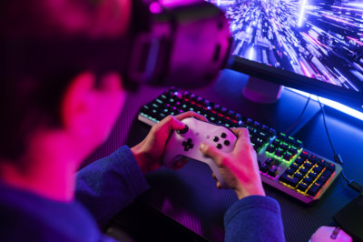

Sobre a Start Games
A Start Games, uma divisão da LTI - Light Technologies, orgulha-se de apresentar seu console de jogos revolucionário. Com o compromisso de criar experiências únicas e emocionantes para jogadores de todas as idades, a Start Games se destaca pela qualidade e criatividade de seus projetos. A equipe é composta por profissionais apaixonados por games que trabalham incansavelmente para desenvolver títulos inovadores, conquistando tanto o público quanto a crítica especializada. A empresa investe continuamente em pesquisa e desenvolvimento para garantir o uso das tecnologias mais avançadas na criação de seus jogos, proporcionando gráficos impressionantes, jogabilidade envolvente e narrativas cativantes. Com o suporte da LTI - Light Technologies, a Start Games tem acesso a recursos e inovações de ponta, o que permite desenvolver experiências de jogo ainda mais imersivas e inovadoras. Além disso, a empresa se compromete com a responsabilidade social, promovendo a inclusão e a diversidade no mundo dos games. Com um futuro promissor, a Start Games continua a expandir seus horizontes, buscando novas oportunidades e desafios para levar o entretenimento digital a um novo patamar. O objetivo é oferecer aos jogadores o que há de melhor no universo dos jogos.
Um pouco sobre a STStore
A Start Games oferece a STStore, uma loja virtual de jogos digitais que conta com uma vasta biblioteca de títulos, desde lançamentos recentes até clássicos. A loja utiliza algoritmos para fornecer recomendações personalizadas e possui avaliações da comunidade para ajudar os jogadores a tomar decisões informadas. Promoções exclusivas também são frequentes na STStore, tornando os jogos mais acessíveis. Para facilitar o acesso aos jogos adquiridos, a Start Games desenvolveu o STLaucher para computador. Com uma interface intuitiva, o STLaucher permite o download, instalação e gerenciamento de jogos de forma eficiente. Os jogadores podem organizar sua biblioteca, receber atualizações automáticas e acessar conteúdos adicionais facilmente. Essas ferramentas, STStore e STLaucher, proporcionam uma experiência de jogo fluida e agradável, garantindo acesso rápido e fácil aos melhores títulos disponíveis. Se precisar de mais informações ou tiver alguma dúvida, estou aqui para ajudar!